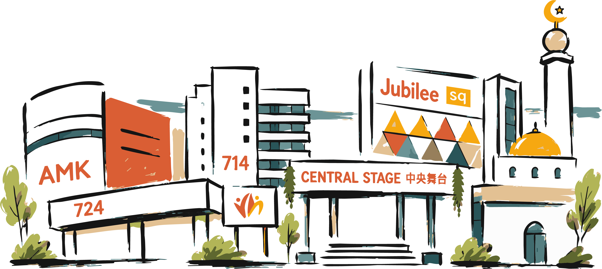
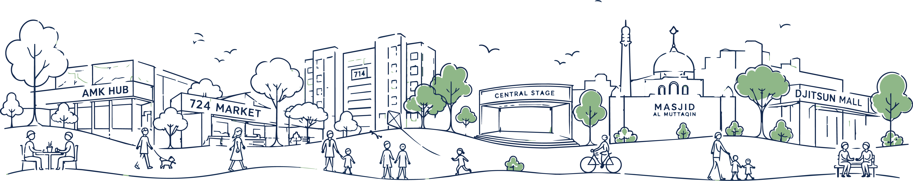
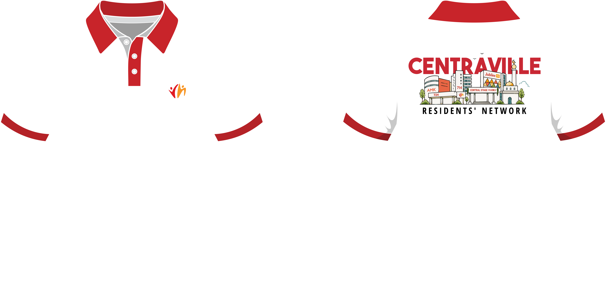
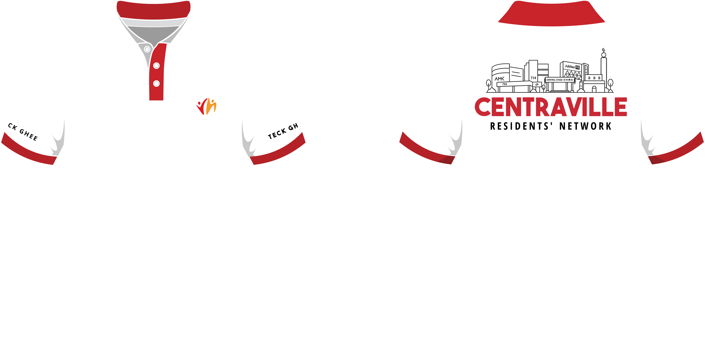
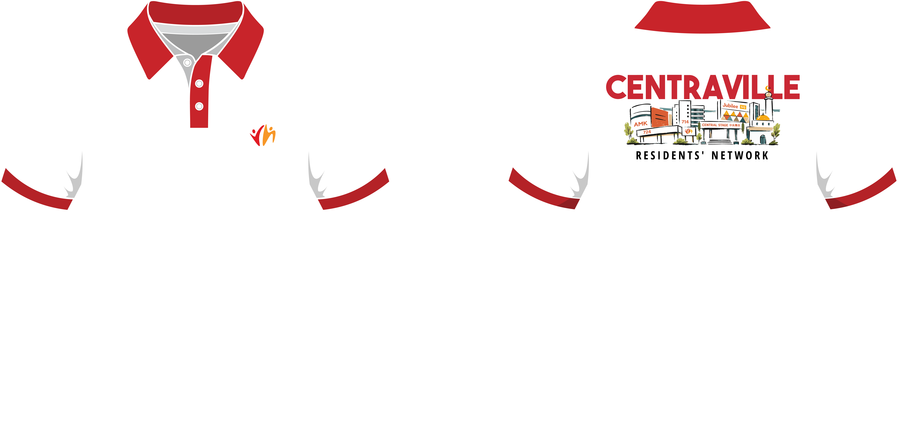
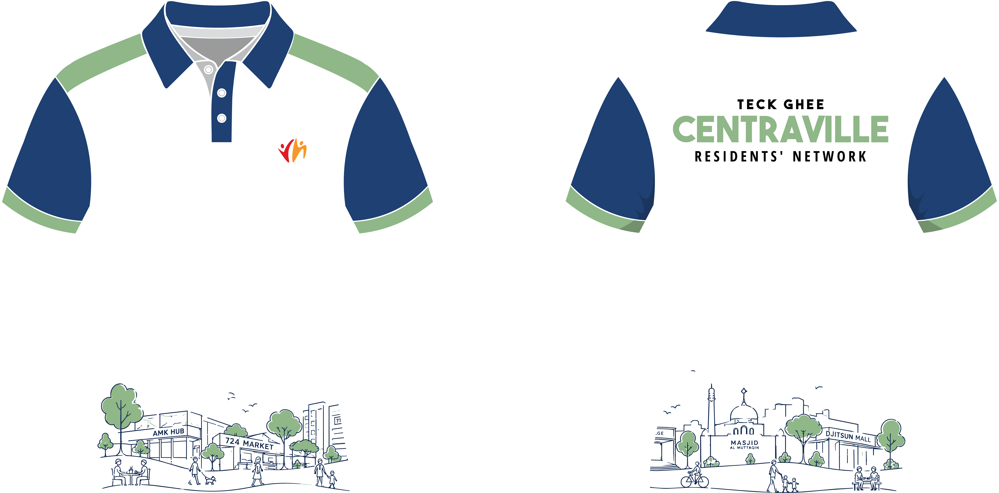

Illustration
Capture the warmth and familiar landmarks of the neighbourhood.
Volunteer identity
A familiar neighbourhood, worn with pride.

Refresh the volunteer polo into a clear, confident expression of Centraville—recognisable at a glance and welcoming up close.
Grounded in the places and people volunteers serve.
Easy to recognise during events and outreach.
Professional enough to represent the network well.
The illustration brings together everyday icons of Centraville: familiar buildings, shared spaces and the people who animate them.
We simplify the neighbourhood without losing its character.
Capture the warmth and familiar landmarks of the neighbourhood.

Reduce the scene to a clean, scalable graphic language.

Balance identity, contrast and everyday wearability.
Bold uppercase lettering creates instant recognition.
Centraville red leads; white keeps the design open.
A consistent line connects multiple landmarks as one place.
Name first, neighbourhood second, network signature last.
A discreet chest placement keeps the front clean and official.
The name leads from a distance; landmarks reward a closer look.
Red collar and sleeve bands create an event-ready silhouette.
Each direction tested a different balance of visibility, storytelling and everyday wearability.

Formal and structured, with the skyline framed as an official emblem.

A compact lock-up that places the illustration inside the name.

A calmer route centred on people, movement and everyday life.
Proceed with the red neighbourhood illustration direction for its recognition, warmth and connection to Centraville.
Together,